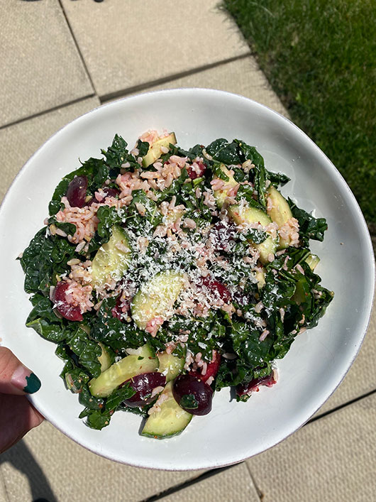

Skip to Content
Cherry Kale Salad

Ingredients
Dressing:
- Juice form half of a Lemon
- 2 Tbs of EVOO
- 1 tsp of Dijon mustard
- 1 ½ tsp of apple cider vinegar
- 1 Tbs of honey
- Salt
- Pepper
Salad:
- 4 leaves of Dino/Lacinato Kale (flat not curly)
- ½ cup of quartered, pitted cherries
- ¼ of a cucumber
- 1 Tbs of EVOO
- Dressing
- Parmesan (freshly grated)
Instructions
- Combine all dressing ingredients in a small bowl and mix
- Adjust the measurements to your own taste
- Remove stems from kale
- Cut kale into small ribbons (thinner slices are easier to digest)
- Place kale in a large bowl, massage with 1 Tbs of olive oil until kale begins to wilt (again, this makes it easier to digest)
- Cut cucumber into bite sized pieces
- Add cucumber, cherries, and dressing to bowl with the kale and toss the salad until everything is coated
- Grilled chicken would also be nice to add if you want to add a protein
- Grate parmesan on top of salad to your liking
- ENJOY!